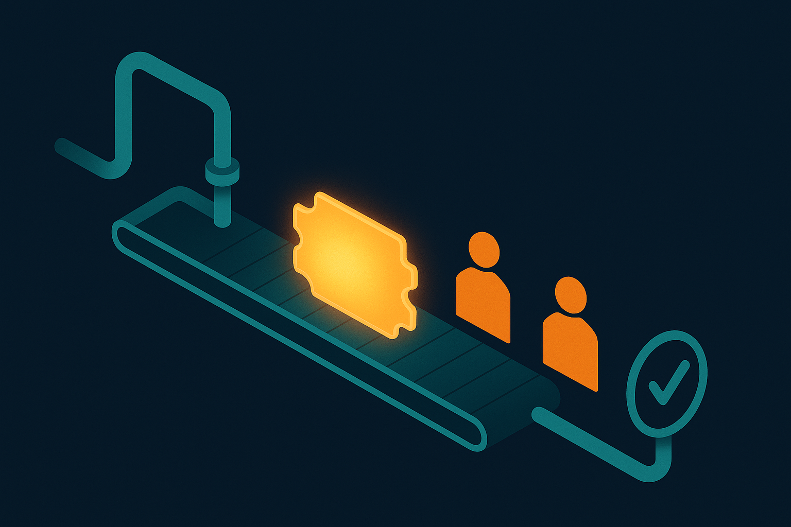
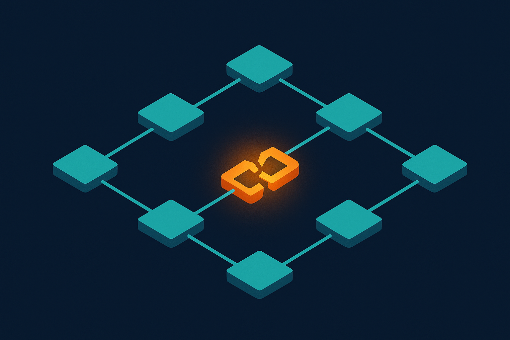
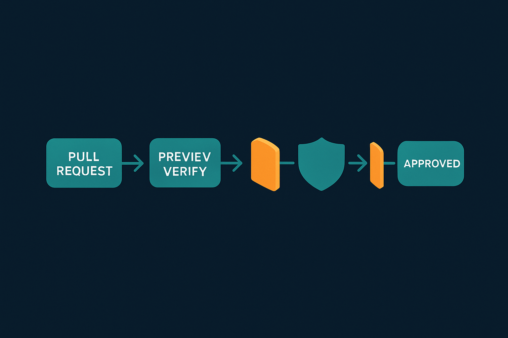
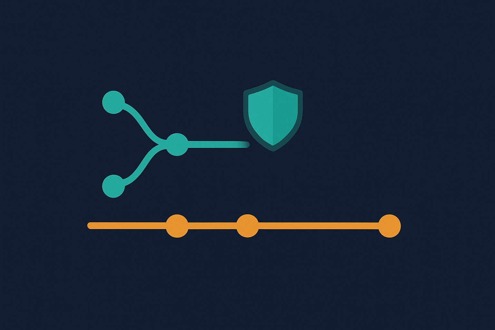
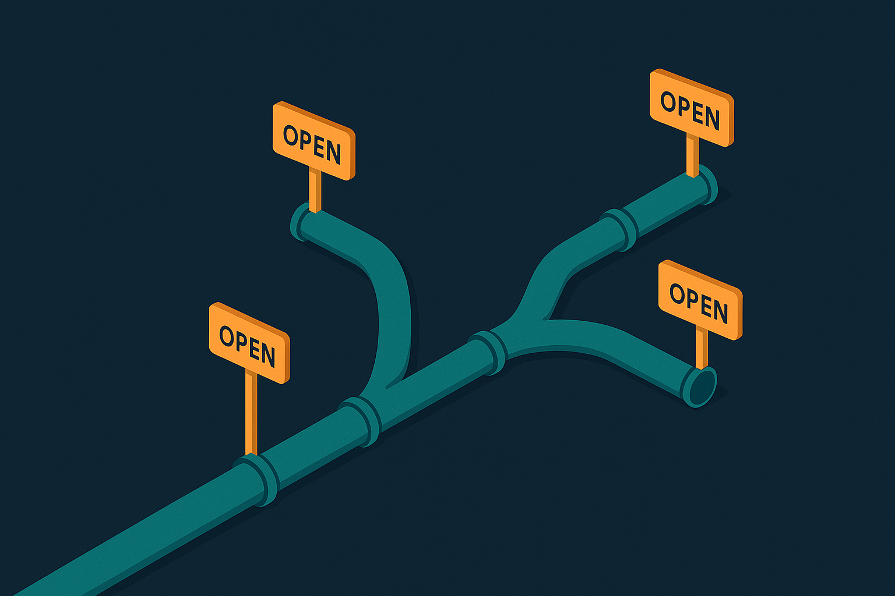
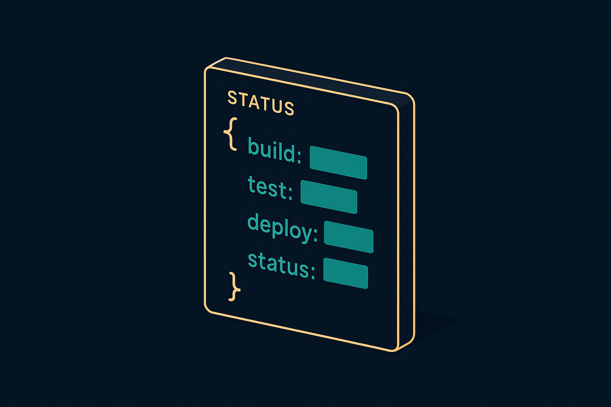

Plan: Ship Choreography — one /ship for every Linear ticket

/ship: automated mechanics between two human gates, ending at In Review — never Done.Purpose
Collapse the manual, error-prone "ship" ceremony at the tail of every Linear ticket — validate → PR → wait for Vercel → merge → guard against a moved base → report → move to In Review — into a single resumable /ship <TICKET> orchestrator. Automate every deterministic step so none can be skipped or mis-ordered, and stop only at the two genuine human gates. This is the highest-leverage workflow fix because it touches every ticket the cnext-HR loop ships.
Problem
Today /linear-implement steps 1, 7 and 8 are executed by hand as ~8 discrete actions per ticket, their correctness living only in one long markdown checklist plus human discipline. Each action is easy to forget or mis-order, and every miss has a concrete failure mode:
| Missed step | Failure that reaches the user |
|---|---|
| Vercel wait skipped | BA gets a comment linking a preview that 404s / is still building |
Rebase-when-origin/master-moved skipped | A stale base merge silently reverts a sibling ticket that merged in between |
| GitHub auto-Done not pulled back | Ticket sits at Done — violates the AI-never-Done rule |
| Comment hand-written each time | Inconsistent, sometimes too technical for a BA reader |
| Screenshots not eyeballed | "Done" claimed on a render that silently broke (e.g. a date showing "-") |

Solution
A hybrid orchestrator, mirroring how planf3 pairs a markdown skill with node scripts. A deterministic ship.mjs owns the ordered mechanical steps and emits a machine-readable ship-status.json at every transition; a /ship slash-command skill drives it, applies the judgment a script can't (does the screenshot actually render? is the BA comment human-readable?), and enforces the two human gates. /linear-implement steps 7–8 collapse to a single /ship <TICKET> call.
Why hybrid, not one or the other: a pure shell script can't verify a rendered screenshot or write BA-friendly prose; a pure markdown prompt can't guarantee deterministic ordering or a hard "refuse to merge a stale base" guard. Splitting mechanics (script) from judgment + gates (skill) gets both.

/ship pipeline: teal = automated & verified, amber = human gate.Relevant Files
Existing Files
- existing
.claude/commands/linear-implement.md— encodes the current ship ceremony (steps 1, 7, 8) this plan consolidates; will be rewritten to call/ship. - existing
.claude/commands/linear-loop.md— the plan-only producer; defines the📋 Implementation plan (… APPROVED)Linear comment that/shipreads as report context. - existing
src/frontend/scripts/audit/deck-capture/cap-cnext-all.mjs— the screenshot harness (seedhumi-auth, null/api/auth/session, rawpage.screenshot({path})) to reuse for gate-2 evidence. - existing
.claude/skills/planf3/— the skill+scripts pattern (SKILL.md router +scripts/+.env.sample+ skill-local.gitignore) to mirror. - existing
.omc/plans/— git-ignored, worktree-local; the reason the portable plan lives as a Linear comment, not a file. - existing
CLAUDE.md— repo conventions (basemaster, port 3000, In-Review cap, BA-friendly comments).
New Files
- new
.claude/skills/ship/SKILL.md— the/ship <TICKET>orchestrator: sequences preflight → ship.mjs → gates → Linear report; encodes both human gates and the never-Done guard. - new
.claude/skills/ship/scripts/ship.mjs— deterministic mechanics: resolve ticket, create/reuse PR, poll+verify Vercel, rebase-guard, merge, detect auto-Done. Node built-ins +gh+git; no new npm deps. - new
.claude/skills/ship/scripts/linear-report.mjs— read ACs + APPROVED plan comment, post the BA-friendly comment with screenshots, transition ticket to In Review (never Done). - new
.claude/skills/ship/scripts/ship-status.schema.json— the JSON status contract exchanged between script and skill. - new
.claude/skills/ship/.gitignore— ignore any local token/scratch (mirror planf3).
Implementation Phases
IMPORTANT: Execute every phase and task step by step, in order, top to bottom.
Status markers: [] idle · [wip] in progress · [x] complete · [f] failed. All start as []; the Build Plan workflow updates them as it works.
[] Phase 1: Preflight & status contract
Establish the abort-early guarantees and the machine-readable state both halves share, before any network action.
1. Define the ship-status contract
[]Writeship-status.schema.json:{ticket, branch, prNumber, prUrl, previewUrl, previewVerified, baseSha, baseMoved, merged, ticketState, gate, errors[]}[]ship.mjswrites/updates this JSON to.claude/skills/ship/.state/<TICKET>.jsonafter each transition (resumable).
2. Preflight assertions
[]Assert cwd is a worktree on afeat/<ticket>-*branch, notmaster→ elseNOT_ON_FEATURE_BRANCH.[]Assertgit status --porcelainis clean → elseDIRTY_TREE.[]Resolve TICKET from the branch name (feat/sta-181-… → STA-181), overridable by--ticket→ elseTICKET_UNRESOLVED.[]git fetch origin; captureorigin/mastersha asbaseSha.
3. Testing Strategy
Node's built-in --check for parse safety; dry-run preflight on both a clean feat branch and on master to prove the guard fires.
[]node --check .claude/skills/ship/scripts/ship.mjs— script parses.[]node ship.mjs preflight --dry-runon a feat branch prints resolved ticket + baseSha, exits 0.[]Same command onmasterexits non-zero withNOT_ON_FEATURE_BRANCH.
[] Phase 2: PR create + Vercel verify (gate 1)
The deterministic PR-and-preview core: open (or reuse) the ticket-cited PR, then prove the Vercel preview is actually live before anyone reviews it.
1. Create or reuse the PR
[]If a PR already exists for the branch (gh pr view --json number,url), reuse it; elsegh pr create --base master.[]Title/body must cite the ticket:<type>(<scope>): <TICKET> — <summary>; body links the Linear issue.
2. Poll + verify the Vercel preview
[]Pollgh pr checks <pr>until the Vercel deployment context succeeds (timeout + backoff; surfacePREVIEW_TIMEOUT).[]Extract the preview URL fromgh pr view --json statusCheckRollup(fallback: the Vercel bot comment).[]HTTP GET the URL → assert200+ non-empty HTML → setpreviewVerified=true.
3. Human gate 1 — review before merge
[]Print the PR link + verified preview URL and stop; resume only on--confirm-merge(or--yolofor full-ZTE auto-merge).
4. Testing Strategy
A --dry-run that prints the exact gh commands without executing, then one rehearsal against a throwaway PR.
[]node ship.mjs pr --dry-run --ticket STA-<n>prints the gh commands, runs nothing.[]Rehearse on a throwaway branch: PR opens, preview verifies, gate-1 halts.
[] Phase 3: Rebase-guard — stale-base / sibling-revert protection
The single most consequential automation: a merge on a stale base silently reverts whatever sibling ticket merged in between. This phase makes that impossible to do by hand-forgetting.

origin/master advanced after baseSha, the guard blocks the merge until the branch rebases + re-verifies.1. Detect a moved base
[]Just before merge:git fetch origin; iforigin/mastersha ≠baseSha→ setbaseMoved=true.[]Refusegh pr mergewhilebaseMoved && !rebased→ emitSTALE_BASE.
2. Rebase + re-verify
[]git rebase origin/master; on conflict → abort toREBASE_CONFLICT(human resolves).[]On clean rebase: re-runnpm run build+ the smoke, force-push, re-poll Vercel until the new preview verifies.[]Only then clear the guard and allow merge.
3. Testing Strategy
Simulate a moved base by merging a no-op PR mid-flight, then assert the guard refuses.
[]Moveorigin/master(merge a no-op PR) between preflight and merge →ship.mjs mergeexits withSTALE_BASE, never merges.[]After an automated rebase + re-verify, merge proceeds cleanly.
[] Phase 4: Merge + Linear report + In Review (gate 2)
Land the change, then produce the BA-facing evidence and move the ticket exactly one step — to In Review, never Done.
1. Merge when clean
[]gh pr merge --merge --delete-branchonly whenstatusCheckRollupis CLEAN and the guard is clear.[]Syncmaster; if GitHub auto-moved the ticket to Done, recordticketStatefor pull-back.
2. Evidence + human gate 2
[]Capture screenshots via the deck-capture harness intospecs/ship/<TICKET>/.[]SendUserFilethe shots; require an eyeball-OK before the Linear write — verify the render, not just green tests.
3. Report + transition
[]Post a BA-friendly Linear comment (short, non-technical, Vercel + localhost screenshots) viamcp__linear__save_comment.[]Transition to In Review viamcp__linear__save_issue; if it sat at Done, pull it back. Hard guard: never sets Done.[]git worktree removethe task worktree.
4. Testing Strategy
Dry-run the report (print the comment body + target state, write nothing), and unit-guard the never-Done rule.
[]node linear-report.mjs --dry-run --ticket STA-<n>prints the comment + target state, writes nothing to Linear.[]FeedticketState=Done→ the transition logic outputs In Review, never Done.
[] Phase 5: /ship skill + wire into linear-implement
Assemble the orchestrator and retire the hand-run ceremony.
1. Author the skill
[]Write.claude/skills/ship/SKILL.md: preflight → (build+review assumed done by linear-implement) →ship.mjsPR/verify → gate 1 → rebase-guard → merge → screenshots → gate 2 →linear-report.mjs→ In Review → worktree cleanup. Encode both gates + the never-Done guard explicitly.[]Add.claude/skills/ship/.gitignore(ignore.state/and any local token), mirroring planf3.
2. Wire + document
[]Rewritelinear-implement.mdsteps 7–8 to "run/ship <TICKET>"; keep steps 1–6 (validate/build/verify/review) as-is.[]Save memoryfeedback_ship_choreographypointing at the skill; add MEMORY.md line.
3. Testing Strategy
An end-to-end rehearsal on one real low-risk ticket, asserting every gate fires and no step is skipped.
[]Rehearse/shipon one low-risk ticket end-to-end; confirm gate 1, rebase-guard, gate 2, and In-Review all fire.[]Grep the skill for both human gates + the never-Done guard.
Validation Commands
Execute these commands to validate the entire plan is complete:
[]node --check .claude/skills/ship/scripts/*.mjs— every script parses.[]node .claude/skills/ship/scripts/ship.mjs --dry-run --ticket STA-<n>— prints the full action plan, zero side effects.[]Throwaway-PR rehearsal: PR created → Vercel verified → gate halts → clean merge → ticket → In Review (not Done).[]Stale-base drill: base moved mid-flight →STALE_BASE, refuses to merge until rebased.[]grep -n "In Review\|never.*Done\|confirm-merge" .claude/skills/ship/SKILL.md— gates + never-Done guard present.
Questionables

Hybrid split (script + skill) vs a single artifact?
Leaning: hybrid. A pure script can't judge a rendered screenshot or write BA prose; a pure prompt can't guarantee ordering or a hard stale-base refusal. Mechanics → ship.mjs; judgment + gates → /ship. Mirrors planf3.
Should gate 1 (pre-merge review) be mandatory, or does full-ZTE auto-merge?
Leaning: gate on by default, --yolo to skip. ZTE self-merge is allowed, but the "send screenshots before claiming done" rule means gate 2 is non-negotiable. Gate 1 defaults on; --yolo collapses to autonomous merge for trusted low-risk tickets.
Where do the scripts live?
Leaning: .claude/skills/ship/scripts/ (skill-local, like planf3) — not src/frontend/scripts/, because this operates on git/gh/Linear, not the frontend app.
How to detect the Vercel preview URL + readiness?
Leaning: gh pr checks + statusCheckRollup, fallback to the Vercel bot comment. Avoids a new Vercel API token; gh is already authed.
Reuse the deck-capture harness for screenshots, or write new?
Leaning: reuse. cap-cnext-all.mjs already solves seed-humi-auth + null /api/auth/session + raw page.screenshot (the MCP path-deadlock workaround). Wrap, don't rebuild.
Notes
Dependencies
No new npm packages. Uses Node built-ins (node:child_process, node:fs, fetch), the already-authed gh CLI, git, and the existing Linear MCP (https://mcp.linear.app/mcp, type http). Screenshots piggyback on the repo's Playwright.
Scope guard (mockup phase)
src/frontend runtime, and is safe during the UI-mockup phase. It does not wire any backend.Rejected alternatives
- Full GitHub Actions automation — CI/backend is out of scope this phase, and self-merge must stay agent-driven so gate 2 (eyeball screenshots) can run. Revisit after HR sign-off.
- Pure shell script — can't render-verify or write BA prose; would still leave the judgment steps manual.
- Bolting onto
linear-implement.mdas more prose — the whole problem is that prose-checklist correctness depends on human discipline; the fix must be executable.
Interaction with the two-session split
/ship runs only in the implement (ZTE) session. It reads the portable 📋 Implementation plan (APPROVED) Linear comment (the plan-only session's handoff) for report context — never assumes a local .omc/plans/*.md exists in the fresh worktree.
Future work
After HR sign-off: promote the gates behind a config flag; add a --batch mode that still honors one-topic-at-a-time by shipping sequentially with a confirm between tickets.

ship-status.json contract makes every stage resumable and inspectable.Amendments
No amendments yet — populated by the Update Plan / Update References workflows after first execution.